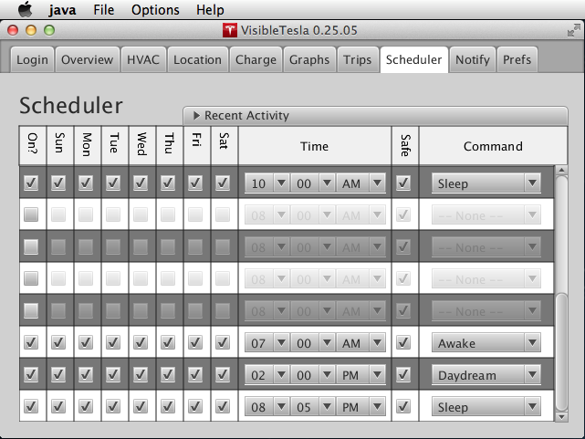

The Scheduler Tab
VisibleTesla includes a very basic capability for scheduled activities like charging your car or turning on or off your air conditioning. For scheduled events to be executed, Visible Tesla must be running. That is, if you schedule your vehicle to turn on the HVAC system at 7:30AM so that your car is warm by the time you get to it at 7:45, then VisibleTesla must be running at 7:30AM to issue the commands. The screen shot below shows the Scheduler Tab.

Each row represents a command that can be scheduled independently. There are 8 rows meaning that up to 8 distinct schedules can be set. The fields for each row are as follows:
| Column | Description | ||||||||||||||||||||||||||
|---|---|---|---|---|---|---|---|---|---|---|---|---|---|---|---|---|---|---|---|---|---|---|---|---|---|---|---|
| On? | If selected then this schedule is active. If not selected, VT will remember the scheduled event, but not execute it. | ||||||||||||||||||||||||||
| Sunday-Saturday | The scheduled event will be executed only on the selected days. | ||||||||||||||||||||||||||
| Time | The time at which the command will be executed. Minutes can be specified with a granularity of 5 minutes (00, 05, 10, ...) | ||||||||||||||||||||||||||
| Safe | If selected, the command will only be executed if there is sufficient power available. What constitutes safety is defined in the Scheduler preferences. It can consist of a minimum battery level, the car being plugged-in, or both. If "Safe" is selected but the specified requirements are not met, the command will not be executed. | ||||||||||||||||||||||||||
| Command |
The Command to execute. Choices are:
|
The Sleep, Daydream, and Stay Awake commands can be used, for example, to tell the app to sleep at night and daydream during the day. Note that executing one of these commands simply causes the app to enter the associated inactivity mode. The app must still be idle for 15 minutes before it will sleep or daydream.
Please remember that using this functionality can trigger activity that depletes your battery. You are solely responsible for any negative consequences that this might produce.